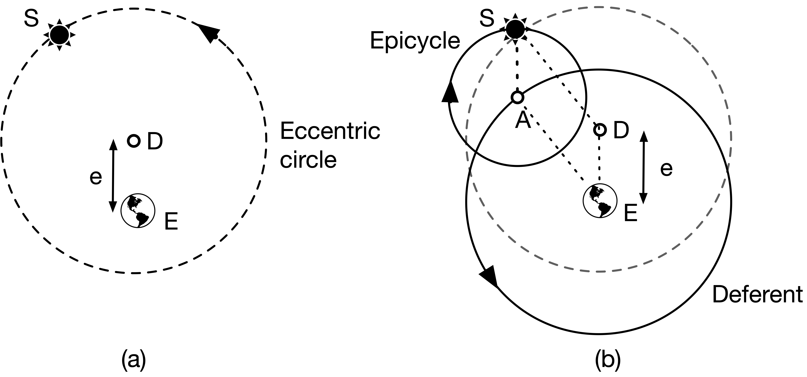
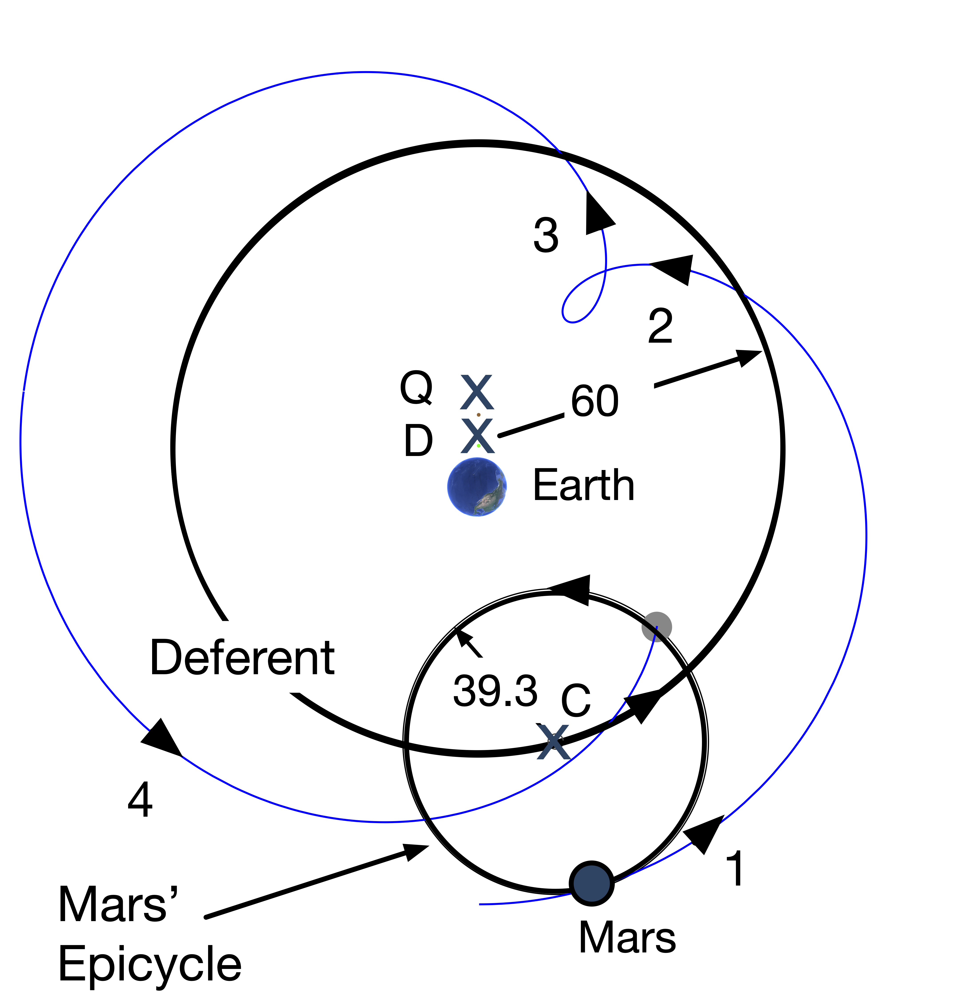

1 Skinny Early Cosmology.
Skinny Physics is meant to be a lightweight (skinny, after all) presentation of some physics that might help you appreciate some of the posts in QS&BB. Maybe you’ve had a course in your past and maybe not, so this chapter has some bare bones (skinny, after all) facts about Early Cosmology.
So: three sections:
Some ideas you might not have had in a previous course (“Different way”) 😎. Better read this.
Just a bare listing of some Early Cosmology facts 🎯.
…and, a bit of gentle background behind those facts 🐇.
(If you’d like more, then visit the full textbook presentation.)
1.1 Different way 😎:
🫵 There are some myths about the Sun-centered solution to the solary system arrangements.
Everyone was taught that Copernicus solved the problem of how the planets moved in the solar system. Nope. ?@sec-scattering
:::
1.2 Just the facts 🎯:
Complete facts about the universe, more than normal for “Just the facts”
- The Sun is at the center of the solar system, which is a part of our galaxy, the “Milky Way.” Our galaxy is a spiral galaxy with a radius of about 50,000 light years (10kly). There are about 200 billion stars in our galaxy.
- In turn, the Milky Way is a part of a cluster of galaxies called the “Local Group” which is a group of just under 50 galaxies all bound by gravity to one another in the group. It has a radius of about 5 million light years (5Mly), contains 3 large galaxies (Milky Way [90kly], Andromeda M31 [140kly], Triangulum Galaxy M33 [55kly], 46 dwarf galaxies, and 700 billion stars.
- The Local Group is gravitationally bound to the Virgo Supercluster 200 galaxy groups, 2500 large galaxies, and 50,000 dwarf galaxies with 200 trillion stars. All within 100Mly in radius.
- Within a billion light years, there are “walls” of galactic superclusters and enormous voids. There are 100 superclusters in this region and 250,000 trillion stars.
- The visible universe of 14Bly as a whole contains 10 million superclusters and 25 billion galaxy groups accounting for 30 billion trillion stars.
Some facts about the solar system
- The solar system consists of the Sun and 8 planets and maybe 200 dwarf planets (including Pluto) which are bound to the Sun, but with size and orbital dynamics that are different from the larger 8 planets.
- Which are: Mercury, Venus, Earth, Mars, Jupiter, Saturn, Uranus, and Neptune.
- The Earth has 1 satellite (the Moon) but there are 757 other moons in the solary system.
- There are roughly 4500 comets in the solar system.
- Before the advent of telescopes, the only planets visible to the naked eye were: Mercury, Venus, Earth, Mars, Jupiter, Saturn, and the ancients included the Moon. This was the inventory before Galileo found four moons of Jupiter.
Some old observations:
- The stars all appear to circle around the Earth as if the Earth were at the center of a great sphere – the “celestial sphere.”
- From our Earth-bound perspective, the Sun, Moon, and planets also circle around us as if they’re on orbits that the ancients also mentally attached to rotating spheres…which we can see through.
- The Greeks through Galileo were stuck on the idea that all of the motions of the heavenly bodies follow circular orbits.
- For 2000 years the Earth was believed by all to be at the center of not only the solar system but the universe as a whole.
- 👉 We know that the Sun is at the center and Earth orbits it every year. The other planets orbit the Sun at different rates – so they have different “years.” When the Earth passes by a slower moving planet like Mars, in can appear to be receeding – going backwards relative to the Earth (think about runners on a track with an inside runner passing an outside runner).
- From the Earth, this behavior is evident during successive nights. The background stars – those of the 30 billion trillion which we can see – act as a coordinate system of sorts. If Mars is near one star on a night, then each successive night, it will appear to advance towards the East relative to that star. But at some point, the Earth passes Mars and to an Earth-bound observer, Mars appears to go toward the West each night. Then, after weeks, it will regain its Eastward location relative to the stars each night. This is called “Retrograde Motion” and was seriously confusing to everyone before Copernicus.
- The other obseration that the Greeks knew was that the seasons appear to have different durations.
Facts from Skinny Early Cosmology
The first working (gave right answers to predicted planetary positions at any time) model of the universe was due to the Greek, Roman, Egyptian Claudius Ptolemaios (“Ptolemy”) of Alexandria (approximately 90 CE – 168 CE). His epicycular model was just a calculational tool, not necessarily a model that matched what planets actually do.
Copernicus’ model of the universe entailed the Sun at the center with the planets all orbiting in perfectly circular orbits in the plentary order that we know today. There are caveats (see below)
Kepler’s three conclusions based on fitting Mars data:
- The law of Orbits: All planets move in elliptical orbits with the sun at one focus.
- The law of Areas: A line that connects a planet to the sun sweeps out equal areas in equal times.
- The law of Periods: The square of the period of any planet is proportional to the cube of the semimajor axis of its orbit. This is written just above in a simple proportionality. The planets are truly elliptical, but not very much so that \(R\) can be treated as the average radius of the orbit with little error.
The law of periods means:
\[ \begin{equation} k = \frac{T^2}{R^3}. \end{equation} \]
The proportionality constant depends on the system. If the system is a planet in the solar system, then I will designate it as $ k = k_S $, where the “S” refers to the Sun. If the Moon, or any satellite around the Earth, I’d refer to \(k=k_E\) . These two constants are not the same, but they are the same value for all of the orbiting objects in the two systems.
1.3 Anchors to topics ⚓️:
1.4 Gentle explanations of Early Cosmology 🐇
Big subject, this “cosmology” one, limited to the universe and all. SkinnyPhysics isn’t the place for a signficant history lesson. But history plays a role about how models of cosmology developted.
1.4.1 Greeks
What did the Greeks observe? Well, of course they observed essentially the same things that we observe and the same things that the Babylonians and Egyptians observed. The Babylonians had a lot of data, but all they did was describe what they saw. The Greeks were the first to actually try to explain what they saw and for them, this was a job for Philosophers and Mathematicians. This is where they were first: using mathematical (meaning: geometrical) arguments to learn facts about the heavens. There were intellectual giants who set themselves on this task from the period between Plato (roughly 425 - 347 BCE) in Athens and Ptolemy (roughly 90 - 168 CE) one of many Alexander the Great’s cities called Alexandria…the one in Egypt.
Among their accomplishments were: * a determination of the radius of the Earth, which was pretty close; * an understanding of solar eclipses as a near-perfect blocking of the Sun by the Moon; * an estimate of the distance from the Earth to the Moon (\(D_M\)) in terms of the radius of the Earth (\(R_E\)): about, \(D_M = ~60 \times R_E\); * the creation of a very large and sophisticated star catalog, of course just positions of the stars as there were no telescopes.
The Greeks were very clever and invented the idea of not just describing Nature but trying to explain phenomena by interpreting measurements using mathematics. Explanation required some mechanism.
They maintained a commitment, underscored by Aristotle: all motions in the heavens (for Aristotle, beyond the Moon) are uniform angular motions in circular orbits around the Earth. The Earth was the center. The stars are in a sphere outside of Saturn’s orbit.
The model that Aristotle created (he was no mathematician and so his “modeling” was simpley descriptive) was built from a complicated set of coupled spheres that had four different axes in order to simulate the daily and annual motions of the planets and also their retrograde behavior. Actually, he stole it from its inventor, Eudoxus of Cnidus (roughly 408 BCE - 355 BCE), a buddy of Plato’s. While Eudoxus built models for each of the planets (and Moon and Sun), Aristotle put them all together into one big model of the whole shebang. He required 57 different spheres. (Often called “crystaline spheres” credited to Aristotle, but that’s not correct. He never said that. It’s a medieval term,)

1.4.2 Ptolemy
The Aristotelian model failed to explain a number of directly observable things:
First, Venus and Mercury seemed to be related to the Sun, always very near it. That seemed hard to understand if the Sun, Mercury, and Venus all rotated around the Earth.
Second, Venus seemed to change its brightness in ways that no other planet did.
Third, some planets appeared to suddenly go backwards!
And fourth, the seasons should have been all the same durations in Aristotle’s model (times from solstice to equinox to solstice to equinox)…but they are not the same number of days.
Various modifications were suggested in the second century, BCE, and two mathematical tricks were invented by the brilliant mathematician, Apollonius of Perga (240 BCE – c. 190 BCE). He invented two constructions that might account for some of the above anomalies. The eccentric and eplicycle models.

What Ptolemy did is reverse the sense of the epicycle rotation to be counterclockwise. That changes everything and causes the planet to execute a loop at a point it its orbit. This is shown in the next figure for Mars using Ptolemy’s actual numbers. He made each planet have a deferrent radius of “60” which is an arbitrary scale. Then the relationship to the Earth for each planet scales to make it work. He fit each planet with four points in its orbit.
